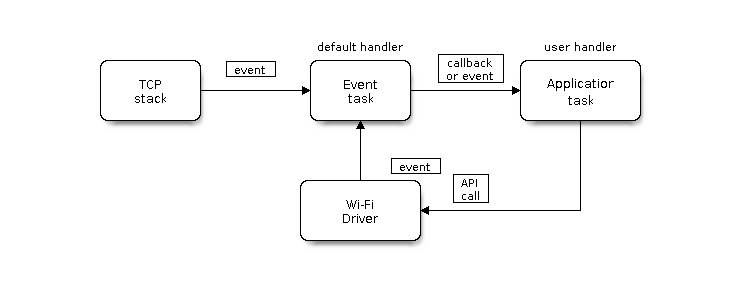

Práctica 2. WiFi en el ESP32
Objetivos
- Conocer el flujo de trabajo del driver WiFi en ESP-IDF.
- Analizar las diferencias entre un firmware desarrollado para trabajar en modo station y en modo AP.
- Desarrollar un firmware combinado para que funcione en modo AP y station de forma simultánea.
- Conocer los mecanismos de escaneado de redes en ESP-IDF.
- Conectar a redes vía WPA2 Enterprise desde el ESP32 (eduroam).
Introducción
Las bibliotecas y componentes de soporte WiFi en ESP-IDF proporcionan soporte para configurar y monitorizar la conexión 802.11 sobre placas ESP32. Este soporte incluye configuraciones para:
-
Modo
station(modo cliente WiFi, o STA). En este caso, el ESP32 conecta con un punto de acceso preconfigurado. -
Modo
AP(también denominado softAP o modo Punto de Acceso). En este caso, son las estaciones las que conectan al ESP32. -
Modo combinado AP-STA, donde el ESP32 actúa de forma concurrente como punto de acceso (AP) y cliente WiFi conectado a otro punto de acceso (STA).
-
Varios modos de seguridad tanto en modo cliente como en modo AP (WPA, WPA2, WEP, etc.)
-
Escaneado de puntos de acceso (activo y pasivo).
-
Provisionamiento de claves y modo WPS.
-
Modo promiscuo para monitorización de paquetes IEEE 802.11.
En la presente práctica, a través de ejemplos básicos, estudiaremos las características principales soportadas por el driver WiFi sobre el ESP32. Todas estas características pueden ser utilizadas a posteriori para el desarrollo de códigos y proyectos más complejos con mínimas modificaciones.
Modelo de programación del driver WiFi en ESP-IDF
El modelo de programación del driver WiFi en ESP-IDF sigue un modelo de programación sencillo que se puede resumir en la siguiente imagen:

Puede considerarse que el driver WiFi es una caja negra independiente del resto de la aplicación, como la pila TCP/IP, las tareas de aplicación y los eventos. El código de las tareas de aplicación generalmente invoca a la API WiFi para inicializar el dispositivo inalámbrico y tratar eventos específicos cuando resulta necesario. El driver WiFi recibe invocaciones a su API, las procesa y emite eventos a la aplicación.
El tratamiento de eventos WiFi se basa en la biblioteca de eventos
esp_event;
los eventos se envían por parte del driver al bucle de tratamiento de eventos
por
defecto.
La aplicación registra una serie de funciones callback, a través de la función
esp_event_handler_register(), que serán las responsables de tratar estos
eventos. Algún tipo de eventos es también procesado por el componente
esp_netif para proporcionar reacciones por defecto ante su recepción. Por
ejemplo, cuando un dispositivo se conecta a un AP el esp_netif arranca un
cliente DHCP para obtener una dirección IP sin intervención del código de
usuario (aunque este comportamiento por defecto puede ser personalizado para,
por ejemplo, asignar una dirección IP estáticamente).
Nota
Toda la API mencionada a continuación se encuentra descrita en profundidad aquí. Se aconseja disponer de esta información durante el proceso de desarrollo y también en el propio desarrollo de la práctica.
Eventos WiFi
Se listan a continuación algunos de los ejemplos más utilizados en la gestión de conexiones WiFi, que utilizaremos en los ejemplos posteriores.
-
WIFI_EVENT_SCAN_DONEEste evento se envía automáticamente en la invocación de
esp_wifi_scan_start(), en los siguientes escenarios:- El escaneado de redes se completa, es decir, se ha encontrado el punto de acceso (AP) objetivo.
- El escaneado de redes finaliza tras la invocación de
esp_wifi_scan_stop(). - Se invoca al inicio de un nuevo escaneo (mediante la rutina
esp_wifi_scan_start()) antes de finalizar un escaneado previo. Este nuevo escaneado se superpondrá al anterior y se emitirá el evento.
El evento no se emite cuando el escaneado se fuerza mediante la invocación a
esp_wifi_connect().Ante la recepción de este evento, no se lanza ningún proceso específico como respuesta. La aplicación necesitará invocar normalmente a
esp_wifi_scan_get_ap_num()y aesp_wifi_scan_get_ap_records()para recoger la lista de APs escaneados y liberar los recursos (memoria) que se aloja en el proceso de escaneado. -
WIFI_EVENT_STA_STARTEste evento se envía cuando, tras la invocación a
esp_wifi_start(), ésta devuelveESP_OK. Tras la recepción de este evento, se inicializa la interfaz de red, por lo que normalmente, tras la recepción de este evento se está listo para invocar aesp_wifi_connect()para comenzar el proceso de conexión con un punto de acceso (AP). -
WIFI_EVENT_STA_STOPEste evento se envía cuando, tras la invocación a
esp_wifi_stop(), ésta devuelveESP_OK. Tras la recepción de este evento, se libera la dirección IP, se detiene el cliente DHCP y se liberan las conexiones TCP/UDP existentes. Normalmente no se trata desde el punto de vista de la aplicación. -
WIFI_EVENT_STA_CONNECTEDEste evento se envía cuando, tras la invocación a
esp_wifi_connect(), ésta devuelveESP_OK. Tras la recepción de este evento, arranca un cliente DHCP para la obtención de una dirección IP. A continuación, si todo ha ido bien, el driver WiFi está listo para enviar y recibir datos.Dicho instante es el adecuado para comenzar con la lógica de la aplicación, siempre que ésta no dependa de la correcta obtención de una dirección IP. Si este es el caso, será necesario esperar a la obtención de la misma esperando al evento
WIFI_EVENT_STA_GOT_IP. -
WIFI_EVENT_STA_DISCONNECTEDEste evento se genera en los siguientes escenarios:
- Cuando se invoca a las funciones
esp_wifi_disconnect(),esp_wifi_stop(),esp_wifi_deinit()oesp_wifi_restart()y la estación está conectada al punto de acceso. - Cuando se invoca a
esp_wifi_connect(), pero el driver WiFi no consigue configurar una conexión con el AP debido a cualquier razón (por ejemplo, el escaneo no puede encontrar el AP objetivo, el proceso de autenticación no tiene éxito, etc). Si hay más de un AP con el mismo SSID, el evento se emite sólo cuando el dispositivo no puede conectar a ninguno de los APs encontrados. - Cuando la conexión WiFi se interrumpe, por ejemplo porque el dispositivo pierde N beacons emitidos por el AP, el AP expulsa al dispositivo, el modo de autenticación cambia, etc.
Resulta común que la rutina de tratamiento del evento trate de invocar de nuevo a la función
esp_wifi_connect()para reintentar la conexión. - Cuando se invoca a las funciones
-
WIFI_EVENT_STA_GOT_IPEste evento se emite cuando el cliente DHCP obtiene una dirección IPv4 desde un servidor DHCP, o cuando se modifica su dirección IPv4. El evento significa que todo está listo y que la aplicación puede continuar con sus tareas (por ejemplo, creación de sockets, inicialización de protocolos, etc.)
La dirección IPv4 podría modificarse por alguna de las siguientes razones:
- El cliente DHCP no puede renovar la dirección IPv4 tras su expiración (los servidores DHCP suelen conceder direcciones IP durante un tiempo limitado).
- El cliente DHCP se asocia a otra dirección.
- Se modifica la dirección IPv4 asignada estáticamente (no vía DHCP).
Normalmente, cuando la IP cambia, todos los sockets asociados a ella quedarán en un estado no utilizable. Así, la recepción de este evento se suele aprovechar para cerrar y a continuación recrear todos los sockets abiertos.
-
WIFI_EVENT_STA_LOST_IPEvento emitido cuando una dirección IPv4 se convierte en una dirección inválida. El evento no se emite inmediatamente tras la desconexión WiFi, sino que inicializa un temporizador de tipo address lost. Si se obtiene una IP antes de su expiración, el evento no se emite. En otro caso, se emite justo en el instante de expirción del temporizador.
Normalmente, las aplicaciones no deben tratar este evento (suele usarse en tareas de depuración).
-
WIFI_EVENT_AP_STARTEmitido en el inicio de un AP (punto de acceso).
-
WIFI_EVENT_AP_STACONNECTEDCuando un dispositivo (station) se conecta a un AP, éste emite el event
WIFI_EVENT_AP_STACONNECTED. Es posible ignorarlo, o aprovecharlo para obtener información sobre la estación conectada, por ejemplo. -
WIFI_EVENT_AP_STADISCONNECTEDEste evento se genera en los siguientes escenarios:
- La aplicación invoca a
esp_wifi_disconnect()oesp_wifi_deauth_sta()para desconectarla manualmente del punto de acceso. - El driver WiFi expulsa al dispositivo (station), por ejemplo en una situación en la que el AP no ha recibido paquetes en los últimos minutos.
Cuando ocurre este evento, la aplicación necesitaría (idealmente) tomar las medidas necesarias asociadas al mismo, por ejemplo, cerrar los sockets abiertos.
- La aplicación invoca a
Modo Station
La siguiente figura describe, a grandes rasgos, algunos de los escenarios principales que pueden darse en modo station:

Se analizan a continuación las fases principales en este tipo de firmware (no todas tienen que estar necesariamente presentes en cualquier escenario).
Fase 1: inicialización WiFi
- La tarea principal invoca a
esp_netif_init()para crear la pila IP y realizar las tareas de inicialización pertinentes. - La tarea principal invoca a
esp_event_loop_create()para crear e inicializar el sistema de eventos. - La tarea principal invoca a
esp_netif_create_default_wifi_sta()para crear la interfaz de red que asocia el dispositivo con la pila TCP/IP. - La tarea principal invoca a
esp_wifi_init()para crear la tarea que manejará la conexión WiFi e inicializa el driver WiFi. - Por último, se invoca (si así se desea, aunque es lo más común) a la API para la creación de la tarea o tareas de aplicación.
Esta secuencia es la recomendada para la inicialización del sistema de comunicación WiFi, pero no es estrictamente obligatorio seguirla en dicho orden o en su totalidad. Por ejemplo, se podría crear directamente una tarea de aplicación (paso 5) y realizar la configuración en su cuerpo, o se puede diferir su creación hasta la obtención de una dirección IP.
Fase 2: configuración WiFi
Una vez inicializado el driver WiFi, comienza su configuración. En
este escenario, el modo debe fijarse a station a través de una invocación
a esp_wifi_set_mode(WIFI_MODE_STA). Es posible invocar a continuación
a otras rutinas de tipo esp_wifi_set_xxx() para configurar parámetros
adicionales (país, ancho de banda, modo de protocolo, ...).
Para más información sobre los modos de operación (station, AP o
modo combinado station/AP, consulta el siguiente
enlace).
Generalmente, es necesario configurar el driver WiFi antes de establecer una conexión, pero no es obligatorio: es posible reconfigurarlo en cualquier momento, siempre que el driver esté correctamente incializado. En cualquier caso, si la configuración no tiene que modificarse tras la conexión, es mejor realizarla en este punto, porque algunos de los parámetros que pueden variar forzarán una reconexión WiFi, aspecto que es mejor evitar.
La rutina esp_wifi_set_config() permite configurar los aspectos básicos
de la conexión WiFi. Por ejemplo, el código:
wifi_config_t wifi_config = {
.sta = {
.ssid = EXAMPLE_ESP_WIFI_SSID,
.password = EXAMPLE_ESP_WIFI_PASS,
.threshold.authmode = WIFI_AUTH_WPA2_PSK,
.pmf_cfg = {
.capable = true,
.required = false
},
},
};
ESP_ERROR_CHECK(esp_wifi_set_mode(WIFI_MODE_STA) );
ESP_ERROR_CHECK(esp_wifi_set_config(ESP_IF_WIFI_STA, &wifi_config) );
Realiza una configuración básica WiFi proporcionando SSID, contraseña y modo de autenticación antes de configurar la conexión.
Fase 3: inicio WiFi
- Invocación a
esp_wifi_start()para iniciar el driver WiFi. - El driver WiFi envia un evento
WIFI_EVENT_STA_START, que será tratado por la tarea de gestión de eventos por defecto para realizar las tareas necesarias e invocará a la runtina de tratamiento del evento a nivel de aplicación. - La aplicación deberá tratar el evento
WIFI_EVENT_STA_START, invocando (se recomienda) aesp_wifi_connect().
Fase 4: conexión WiFi
- Una vez invocada
esp_wifi_connect(), el dirver WiFi comienza un proceso interno de escaneado/conexión. - Si dicho proceso tiene éxito, se genera un evento
WIFI_EVENT_STA_CONNECTED. Automáticamente se invoca al cliente DHCP y comienza el proceso de obtención de dirección IP. - Generalmente, la aplicación no suele responder a este evento, pero podría por ejemplo imprimirse un mensaje por pantalla a modo de depuración.
En el segundo paso, la conexión podría fallar, por ejemplo, si la contraseña
proporcionada es incorrecta. En dicho caso, se envía un evento
de tipo WIFI_EVENT_STA_DISCONNECTED y se proporcionará la causa del error.
En el paso 6 se trata este aspecto.
Fase 5: obtención de IP
- Una vez inicializado el cliente DHCP (paso 4.2) comienza la fase de obtención de IP.
- Si se recibe con éxito una IP desde el servidor DHCP, se emite un evento de
tipo
IP_EVENT_STA_GOT_IP. - La aplicación tratará este evento. Realmente, en este punto puede comenzar la lógica de red de la aplicación, incluyendo, por ejemplo, la creación de sockets TCP/UDP. Es imprescindible la recepción de una dirección IP antes de la inicialización de sockets.
Fase 6: desconexión WiFi
- Cuando finaliza de forma abrupta una conexión WiFi, por ejemplo al apagar
el punto de acceso (AP), si la calidad de recepción (RSSI) es baja, etc.
se emite un evento
WIFI_EVENT_STA_DISCONNECTED. - La tarea de aplicación debería tratar este evento para, típicamente,
reintentar la conexión a través de una invocación a
esp_wifi_reconnect().
Fase 7: cambio de IP
- Cuando la dirección IP asignada a un dispositivo cambia, se emite un evento
de tipo
IP_EVENT_STA_GOT_IP. Por defecto, y de forma automática, se activa el campoip_changede la estructura de tipoip_event_got_ip_tque acompaña al evento. - La aplicación debería tomar las medidas necesarias (por ejemplo, recreación de sockets) para mantenerse en un estado consistente.
Fase 8: terminación WiFi
- Invocación a
esp_wifi_disconnect()para desconectar la conexión en marcha. - Invocación a
esp_wifi_stop()para parar el driver WiFi. - Invocación a
esp_wifi_deinit()para descargar el driver WiFi.
Análisis de un ejemplo (wifi/getting_started/station)
Tarea
Analiza el ejemplo station, compílalo y flashealo. Estudia el tratamiento
de eventos que realiza, y cómo estos son emitidos para casos reales. Para
ello, conecta tu ESP32 con un punto de acceso existente, otro inexistente,
apaga el punto de acceso mientras la IP está concedida, y analiza los
eventos generados y su respuesta.
Entregable 1
Revisa el tratamiento de eventos del código anterior, añade el tratamiento de los eventos que falten por tratar. Entrega tu código con comentarios explicando el código añadido.
Modo Punto de Acceso
La siguiente figura describe, a grandes rasgos, algunos de los escenarios principales que pueden darse en modo AP (access point):

El flujo de trabajo es muy similar al del modo station, con la diferencia
básica del tipo de configuración WiFi a realizar (WIFI_MODE_AP) y obviamente
los parámetros de configuración. Observa el siguiente ejemplo de configuración:
wifi_config_t wifi_config = {
.ap = {
.ssid = EXAMPLE_ESP_WIFI_SSID,
.ssid_len = strlen(EXAMPLE_ESP_WIFI_SSID),
.channel = EXAMPLE_ESP_WIFI_CHANNEL,
.password = EXAMPLE_ESP_WIFI_PASS,
.max_connection = EXAMPLE_MAX_STA_CONN,
.authmode = WIFI_AUTH_WPA_WPA2_PSK
},
};
if (strlen(EXAMPLE_ESP_WIFI_PASS) == 0) {
wifi_config.ap.authmode = WIFI_AUTH_OPEN;
}
ESP_ERROR_CHECK(esp_wifi_set_mode(WIFI_MODE_AP));
ESP_ERROR_CHECK(esp_wifi_set_config(ESP_IF_WIFI_AP, &wifi_config));
Para más información sobre los parámetros de configuración de un punto de acceso, consulta este enlace.
Análisis de un ejemplo (wifi/getting_started/softAP)
Tarea
Analiza el ejemplo softAP, compílalo y flashealo. Estudia el tratamiento
de eventos que realiza, y cómo estos son emitidos para casos reales. Para
ello, conecta distintos clientes (stations), bien sean ESP32 o cualquier
otro dispositivo, y analiza los eventos generados y su respuesta.
Entregable 2
Revisa el tratamiento de eventos del código anterior, añade el tratamiento de los eventos que falten por tratar. Añade en tu código un comentario explicando el código añadido.
Modo combinado Station/Punto de Acceso
ESP-IDF soporta un modo mixto de conexión, en el que el ESP32 es a la vez
un punto de acceso (AP) y una estación (station). Este modo se configura
utilizando el parámetro ESP_MODE_APSTA en la invocación a la rutina
esp_wifi_set_mode().
Además, obviamente el firmware combinado requerirá la creación de dos
estructuras de tipo wifi_config_t, una con los datos asociados al punto
de acceso (campo .ap) y otra con los campos asociados a la
station (campo .sta). A continuación, será necesario invocar a la rutina
de configuración (esp_wifi_set_config) con cada una de dichas estructuras
(por último, también es necesario invocar a la inicialización de
netif tanto en modo station --esp_netif_create_default_wifi_sta()--
como en modo AP --esp_netif_create_default_wifi_ap()).
Ejercicio: desarrollo de un nodo mixto station/AP
Entregable 3
Modifica el ejemplo station para que el ESP32 se comporte a la vez
como estación y como punto de acceso. Añade las opciones de configuración
necesarias para que todos los parámetros se puedan modificar vía
menuconfig. Comprueba que el ESP32 efectivamente se conecta al punto
de acceso y que a la vez es posible conectar otro dispositivo al mismo
(por ejemplo, tu teléfono móvil). Entrega el código.
Escaneado de redes WiFi
Modos de escaneado de redes WiFi
El modo de escaneo de redes WiFi (es decir, la invocación de la rutina
esp_wifi_scan_start()) sólo está soportada en la actualidad en modo
station o station+AP. En este modo, se da soporte a distintos tipos de
escaneado de redes, véase:
- Escaneado activo: El escaneado se desarrolla mediante el envío de paquetes probe y esperando respuesta, de forma activa.
- Escaneado pasivo: El escaneado se desarrolla simplemente escuchando en
cada canal y esperando el envío por parte de los APs de paquetes baliza
(beacons). El modo activo o pasivo puede configurarse desde la aplicación,
mediante el campo
scan_typede la estrcuturawifi_scan_config_t(lo verás en el siguiente ejemplo). - Escaneado en primer plano:: Se utiliza cuando no hay conexión WiFi activa en el momento del escaneado. No es, por tanto, directamente configurable.
- Escaneado en segundo plano: Se utiliza cuando hay conexión WiFi activa en el momento del escaneado. No es, por tanto, directamente configurable.
- Escaneado de todos los canales: Escanea SSIDs en todos los canales.
La forma de activarlo es mediante el valor
0en el campo correspondiente dewifi_scan_config_t. - Escaneado de canal específico: Escanea únicamente en un canal.
Así, existen 8 modos distintos de escaneado de red WiFi, resultantes de la combinación de los anteriores modos, llamados:
- All-Channel Background Active Scan.
- All-Channel Background Passive Scan.
- All-Channel Foreground Active Scan.
- All-Channel Foreground Passive Scan.
- Specific-Channel Background Active Scan.
- Specific-Channel Background Passive Scan.
- Specific-Channel Foreground Active Scan.
- Specific-Channel Foreground Passive Scan.
Configuración de escaneado de redes WiFi
Para configurar una sesión de escaneado, se utilizan los campos correspondientes
de la estructura de tipo wifi_scan_config_t, proporcionada a la rutina
esp_wifi_scan_start(), que es la encargada de iniciar la sesión. Los campos
de dicha estructura son:
ssid: Si SSID no es NULL, sólo se escanea en búsqueda de estessid.channel: Si es 0, se realiza un escaneado de todos los canales. En caso contrario, sólo se escanea el canal especificado.show_hidden: Si es 0, se ignoran los AP con SSID oculto. En caso contrario se consideran SSIDs normales, y por tanto se muestran.scan_type: Si toma el valorWIFI_SCAN_TYPE_ACTIVErealiza un escaneado activo. En cualquier otro caso, el escaneado es pasivo.scan_time: Especifica el tiempo de escaneado por canal.
Escaneado de todos los canales en primer plano. Ejemplo de flujo
El siguiente escenario describe un escaneado básico sobre todos los canales en primer plano (recuerda que únicamente puede ocurrir en modo station si todavía no hay conexión a un AP).
Fase 1: Configuración del escaneado
-
Se invoca a la rutina
esp_wifi_set_country()para establecer el país donde se está desarrollando el escaneado (opcional). -
Se invoca a
esp_wifi_scan_start()para configurar el escaneado. Para ello, se utilizan los parámetros por defecto o se configuran tal y como se ha especificado en la sección anterior.
Fase 2: Fase de escaneado
-
El driver WiFi cambia al canal 1 y emite (en caso de escaneado activo) en modo broadcast un paquete de tipo probe request. En caso de escaneado pasivo, seguirá escuchando en el canal 1 durante un tiempo determinado a la espera de beacons. En cualquier caso, el valor por defecto de espera es de 120 milisengundos.
-
El driver cambia al canal 2 y repite el proceso.
-
El proceso se repite para N canales, donde N viene configurado según el país en el que se lleva a cabo el análisis.
Fase 3: Fase de análisis de resultados
-
Cuando todos los canales se han escaneado, se emite un evento de tipo
WIFI_EVENT_SCAN_DONE. -
La aplicación, a través del callback correspondiente, recibe y procesa los resultados. Se invoca a
esp_wifi_scan_get_ap_num()para obtener el número de APs que se han encontrado. A continuación, reserva memoria para este número de entradas e invoca aesp_wifi_scan_get_ap_records()para obtener la información de cada AP.
Análisis de un ejemplo (wifi/scan)
Analiza el ejemplo de escaneado wifi/scan, e intenta observar el flujo de trabajo detallado anteriormente.
Tarea
Compila, flashea y ejecuta el ejemplo de escaneado. Observa si los resultados son los esperados en el laboratorio o en un entorno doméstico. Modifica el código para conseguir distintos tipos de escaneado, asegurándote, por ejemplo, de que si fijas un canal específico en el que tu punto de acceso está trabajando, éste es detectado corretamente. Estudia y modifica los tiempos de espera en el escaneado y observa su efecto en el tiempo total de escaneado.
Entregable 4
Diseña un firmware de nodo que realice un escaneado de las redes disponibles. Si el nodo detecta la presencia de una o más de las redes conocidas, se conectará en modo STA a la red de mayor prioridad entre las conocidas. Probadlo usando como redes conocidas la del laboratorio, vuestro móvil y vuestro domicilio.
Entregable 5
Codificar el código de la tarea anterior para que la lista de redes conocidas y la prioridad relativa se puedan configurar con menuconfig.
Conexión a una red WPA2 Enterprise (eduroam)
Las últimas versiones de ESP-IDF permiten la conexión a redes con autenticación RADIUS, como por ejemplo eduroam. Aunque los detalles de configuración y desarrollo de un ejemplo concreto van más allá del objetivo de la práctica, es deseable realizar una prueba de conexión a eduroam en el laboratorio, ya que nos resultará de utilidad de cara a futuras prácticas.
Para conectar a eduroam nuestro ESP32, necesitaremos seguir los siguientes pasos:
-
Descarga el certificado de la CA de la UCM desde este enlace. Copia el fichero descargado, con nombre
eduroam.crtal directoriomain, y asígnale el nombrewpa2_ca.pem. -
Configura el proyecto a través de
idf.py menuconfigcon los siguientes parámetros:- SSID: eduroam
- Validate server: activo
- EAP method: TTLS
- Phase2 method for TTLS: PAP
- EAP ID: anonymous@ucm.es
- EAP USERNAME: (tu correo UCM)
- EAP PASSWORD: (tu contraseña UCM)
Entregable 6
Configura el ejemplo de autenticación para WPA2 Enterprise con tus credenciales de eduroam. Compila y ejecuta el ejemplo de autenticación y adjunta una captura de pantalla que demuestre la correcta conexión del nodo a eduroam.